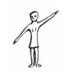

Rune Grimoire
Ehwaz
Modern Relevance
Ehwaz is the horse rune, symbolizing the mastery of destiny and triumph over adversity. It represents freedom, exploration, and confidence in one's abilities.
Tree, Element, and Deity
Tree: oak/ash
Element: earth
Deity: Freya
Meaning: an intuitive bond
Names Across Dialects
| Dialect | Word | Meaning |
|---|---|---|
| Proto-Germanic | ehwaz / ehwo | Horse / the two horses |
| Gothic | aihws | Stallion |
| Old English | eh | War horse |
| Old Norse | íor | Horse (used only in cultic contexts; not found in the Younger Futhark) |
| Icelandic | Eykur | Horse |
| Norwegian | Eh, Eol | Horse |
Phonetic value: e
Esoteric interpretation: the twin gods or heroes in equine aspect
Ideographic interpretation: two upright poles bound together to symbolize the divine twins; also, the sign of two horses facing one another
The Power of the Twin Gods
Ehwo represents the power of the twin gods. This power construct is a reflection of a dual form of Germanic kingship. These leaders were often represented mythically as horses, as with Hengist (stallion) and Horsa (horse), the Saxon conquerors of Britain. The name of the twin gods of the Veda, the Ashvinau, literally means "the two horses." The harmonious relationship between the two forces represented in the dual construct is emphasized, rather than the defensive and outwardly directed power expressed in the Z-rune (Algiz). All this points to the close relationship between mortals and horses felt by the Indo-Europeans in general and the Germanic peoples in particular. The horse is a source of numinous knowledge, and horses were often consulted by the ancient Germanic priests in divinatory rites.
Ehwaz is a spiritual quality closely connected to humankind (Mannaz). In Old Norse it is said: marr er manns fylgja ("the horse is a person's fetch"). The bind rune of Ehwaz and Mannaz is em, which means "I am."
Sleipnir and the Otherworldly Journey
The E-rune facilitates the journey between the worlds of Yggdrasill. The vitki may literally ride its power through the realms of reality. Ehwaz is the rune of Sleipnir, Odin's eight-legged steed. Many runic talismans portray a rider on horseback as a symbol form for integrated magickal protection, under the rulership of Odin. This is the otherworldly aspect of Ehwaz, but the horse is also connected with fertility magick, and thus to Freyr, the god of fertility, peace, and sensuality.
Trust, Loyalty, and Harmonious Duality
This is a rune of trust and loyalty. The spiritual relationship that a rider develops with a horse is a good illustration of the might of this rune. There is much power to be gained in this secret.
Ehwaz is the combination of two sympathetic, yet dually arrayed forces or entities (such as rider/horse, horse/chariot, person/fylgja, body/soul) that work harmoniously together toward one goal (see Thurisaz for the contrasting concept).
The E-rune is the symbol of the ideal partnership and thus is the mystery of lawful marriage.
Rune Character
Represents the horse. Also closely identified with Castor and Pollux, the Gemini twins. Used to see into the future and for psychic communication. Like the fourth chakra, this rune unites opposites. This rune forges bonds and is used to seal marriages and friendships. Can be used to bind another's thoughts and actions to the operator's will. Used in spiritual divination to understand the will of the Gods. Used to empower thoughtforms and bring them under the control and will of the mage. When used with other runes, Ehwaz unites the energies harmoniously.
Keywords
- Harmonious duality
- Vehicle of otherworldly journeys
- Fertility
- Trust, loyalty
- Lawful marriage
Galdr
ehwo ehwo ehwo
ehwu ehwa ehwi ehwe ehwo
ehwo ehwe ehwi ehwa ehwu
Stadha
I. Stand straight with both arms slanted, the left pointed upward and the right downward to form the alternate form of the E-rune.
II. The E-rune bind-stadha in which two vitkar, usually one of each polarity, stand facing one another, each in the L-rune position, thus forming the E-rune together.

Magickal Workings
- Facilitation of soul travel throughout the worlds and projection of the soul in Midhgardhr
- Realization of fundamental unity of the psychosomatic complex
- Imparts trust and loyalty
- A source of prophetic wisdom
- Projection of magickal power
- Facilitates swiftness in every regard
- Psychic communication and seeing into the future
- Binding another's thoughts and actions to the operator's will
- Empowering and uniting the energies of other runes
Constructive Applications
Used to see into the future and for psychic communication. Unites opposites like the fourth chakra. Forges bonds and is used to seal marriages and friendships. Used in spiritual divination to understand the will of the Gods. Used to empower thoughtforms and bring them under the control and will of the mage. When used with other runes, unites the energies harmoniously.
Baneful Applications
Can be used to bind another's thoughts and actions to the operator's will.